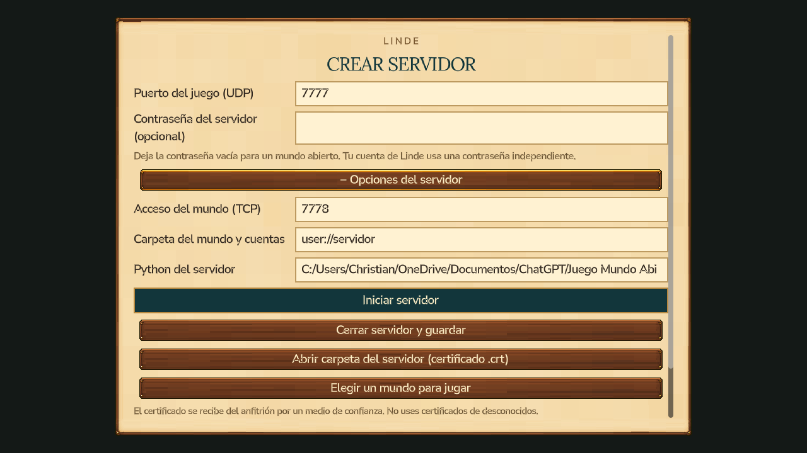

Iniciar sesión
Pergamino, campos claros y una acción principal destacada.
Crear cuenta
Mismo estilo que el juego, con el requisito de contraseña visible.
Alojar un mundo
Puerto y contraseña opcional a mano. Ajustes técnicos dentro de opciones del servidor.
Unirse a un mundo
Cuenta activa, campos alineados y acceso principal destacado.
Servicio de cuentas
Configuración de conexión y alojamiento local organizados por separado.
Avisos y validación
Mensajes sobre un recuadro de contraste, sin confundirse con los botones.
Cargar partidas
La lista de mundos guardados comparte la tipografía y los botones del resto del acceso.
Opciones avanzadas disponibles
Los puertos de acceso, carpeta y Python siguen disponibles. Al desplegarlos aparece desplazamiento para mantener el contenido dentro del marco.

Verificación: 16 comprobaciones del flujo de acceso y guardados superadas, más capturas de formularios y validación de puerto/contraseña. Integración de feature/login-inicial con main c84b88e, autorizada por el usuario.